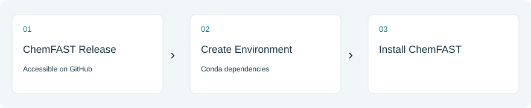
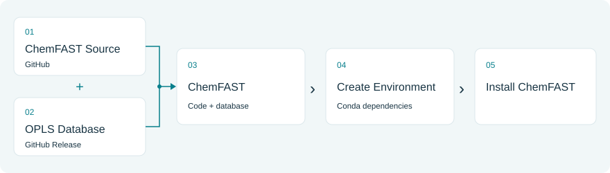

Installation¶
If you only want to try the browser workflows, start with Online tools; no local installation is required.
Installing ChemFAST locally requires a Python environment and the ChemFAST package. ChemFAST requires Python ≥3.12 and RDKit ≥2025.09.5. We recommend managing the environment with Anaconda or Miniconda.
Run the commands below in a terminal. ChemFAST means the project root containing pyproject.toml and environment.yml.
Install from Release Package (Recommended)¶

Download and extract the complete archive from the ChemFAST v1.0.0 release. The complete release package includes the OPLS database. From the directory containing the extracted ChemFAST folder, run:
cd ChemFAST
conda env create -f environment.yml
conda activate chemfast
python -c "import chemfast; print(chemfast.__version__); print(chemfast.__file__)"
The provided environment.yml installs the local package. The import command
checks its version and the source path used by Python.
For release checks:
python -m pytest tests/unit -q
Build from Source¶

Clone the ChemFAST source repository from the directory where you want the project folder, then change into the ChemFAST project root before installing:
git clone https://github.com/DoMD-toolkit/ChemFAST.git ChemFAST
cd ChemFAST
conda create -n chemfast -c conda-forge python=3.12 "rdkit>=2025.09.5" openbabel numba networkx pandas scipy jupyter scikit-learn matplotlib mdanalysis pip
conda activate chemfast
python -m pip install torch --index-url https://download.pytorch.org/whl/cpu
python -m pip install torch-geometric
python -m pip install -e .
On native Apple Silicon, the optional mlx package is installed if required by your project environment.
For source checkouts, the full OPLS database is distributed separately through ChemFAST v1.0.0 on GitHub Releases. When installing through git clone, download opls.db and place it at:
ChemFAST/src/chemfast/ff/opls/opls_db/resources/opls.db
The path above is relative to the directory where you ran git clone; from
inside the ChemFAST project root, it is
src/chemfast/ff/opls/opls_db/resources/opls.db. Once the database is in place,
verify the installation from the project root:
python -c "import chemfast; print(chemfast.__version__); print(chemfast.__file__)"
MD Simulation Engines¶
ChemFAST works with external molecular dynamics engines. PyGAMD and GROMACS currently provide the most direct support for coarse-grained and all-atom simulations, respectively. HOOMD-blue is also recommended for scalable particle simulations.
Engine |
Recommended use |
|---|---|
Coarse-grained polymerization and pre-equilibration |
|
GPU-accelerated particle simulations |
|
All-atom minimization and molecular dynamics |
Install the selected engine separately by following its official installation guide.
Run a Test¶
After installation, run the following command to verify that ChemFAST is working correctly:
python -m pytest -q
The details of the tests can be found in Software testing.
Next: Quick start.